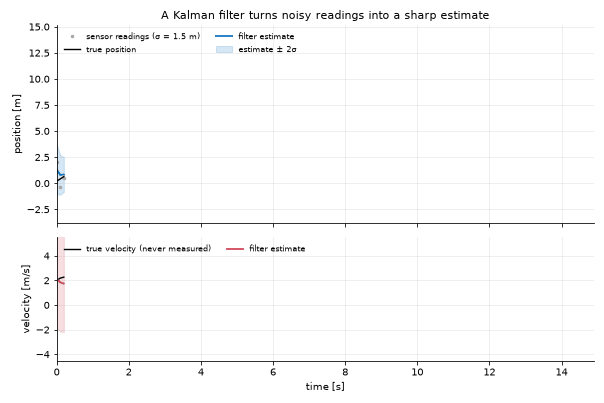

|
Kalman World
1.0.0-2-g101bd0d
State estimation, dynamical systems and predictive learning 🛰️📈
|
Ten minutes, four steps: install, define a system, filter it, check that the filter is telling the truth.

A sensor reads the position of a cart with 1.5 m of noise and nothing measures its velocity. The filter's position (blue) is far closer to the truth than the readings, and it recovers the velocity (red) from how the position changes. The shaded bands are the filter's own statement of how wrong it may be.
If you have not installed anything yet, make setup from the repository root does the whole job — see Installation.
The fastest entry point needs no subclass at all. Give KalmanFilter the dimensions and the matrices, and it builds a generic linear model for you.
Every coefficient stays editable afterwards — kf.F, kf.H, kf.Q, kf.R, kf.x0, kf.P0 are read/write properties that route into the underlying model.
With no instrument at hand, sample the model itself. sample() returns a KalmanRecord carrying the truth (xk), the noisy measurements (zk) and the time base.
For real data, see Providers — a provider returns the same shapes, so nothing downstream changes.
kf.filter(zk, smooth=True) does both in one call. The returned KalmanRecord is the universal currency: time, xk (state estimates), Pk (covariances), zk (measurements), plus len(), indexing and iteration.
The diagnostics dashboard is the part people skip and then regret. A well-tuned filter has NIS ≈ m (the measurement dimension) on average; the example above sits at ~0.99 for m = 1. Much larger means R or Q is too small (the filter is overconfident); much smaller means they are too large (it is ignoring the data). See Filters and Diagnostics.
KalmanModel is the real contract. Constructing it directly gives you a name, a sampling rate and somewhere to hang domain logic later.
46 models ship with the framework. Nothing above changes — swap the model.
List what is available without leaving Python:
share/notebooks/00_Kalman101.ipynb and its 15 siblings.